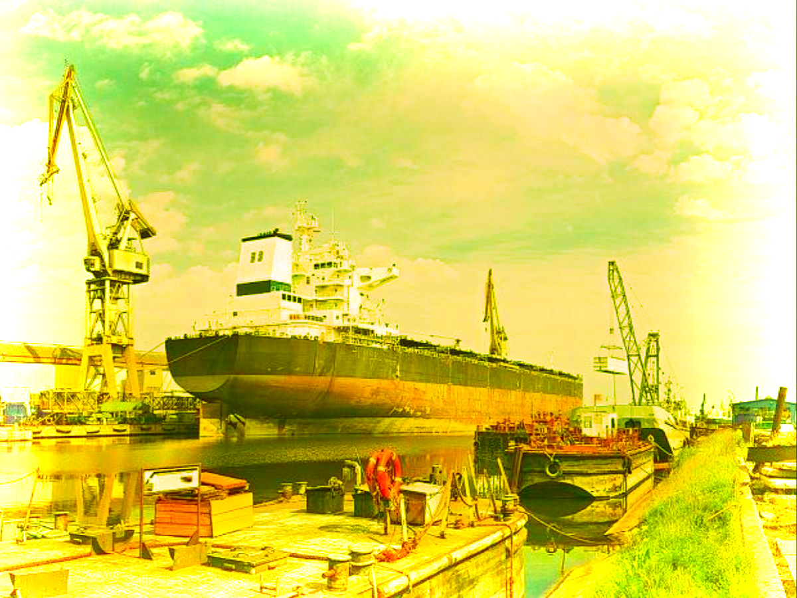
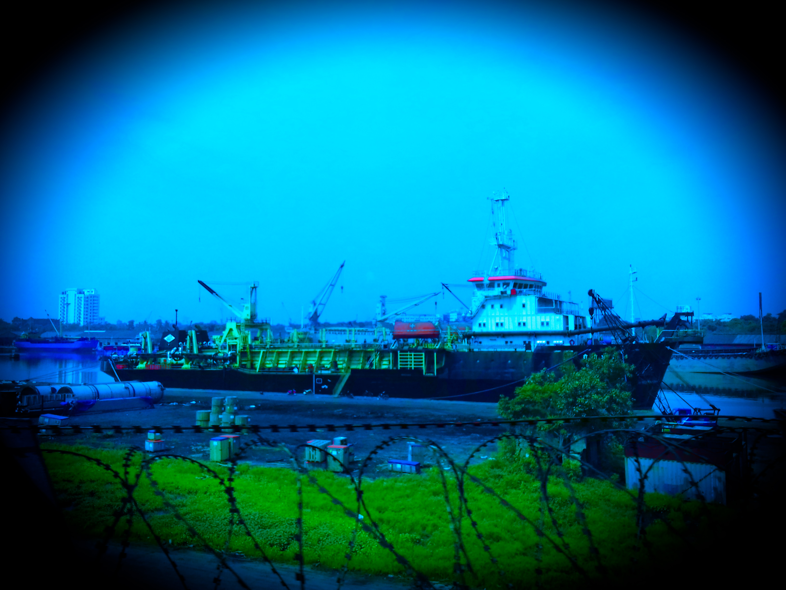

Built and once owned by Nawab Wajid Ali Shah of Awadh, the Kolkata dockyard harbours (no pun intended!) the reputation of one of the most haunted places in Kolkata and has a gamut of horror stories encircling it. Many believe that the place is frequently visited by the restless spirit of the Nawab!
It is believed that he shared maritime trade relations with the East India Company, which was incredibly successful. The Britishers, however, deceived him and took over his homeland, leaving him heartbroken. Some sailors and traders claim to have witnessed shadow or an eerie form roaming around, which they believe is the Nawab’s spirit that haunts the space, on a quest to seek revenge from the Britishers.

There are many scary stories about this place, which is now a significant node of marine trading
raders and sailors have seen shadows (read as Nawab’s shadow) roaming in the dock area. Rumours underline that Nawab wanders around to take revenge from the British for his betrayal. No British, no Nawab. Only dock staff are there for chilling their blood!
THE END
Thanks,
Feel The Fear